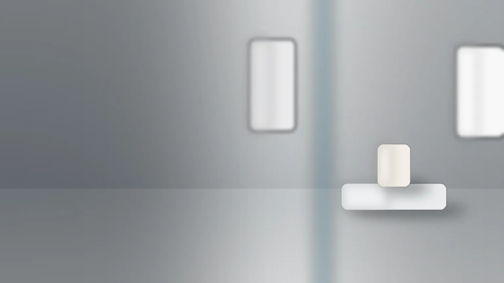
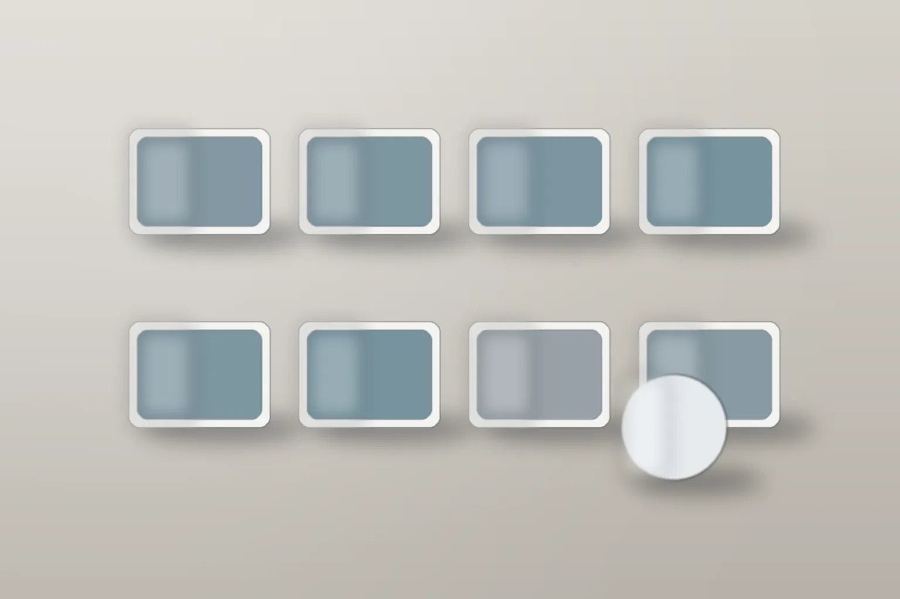

撮影メモ照明 2灯（左右のソフトボックス）背景紙 グレー・三脚
画像はAI生成のイメージです
中小企業の商品撮影と採用動画
商品と職場を、
伝わる光で撮る。
倉庫のスタジオと、会社への出張で撮ります。撮る前に、料金の目安と準備するものをお伝えします。
商品撮影税込
55,000円〜
半日・20カットまで
採用動画税込
198,000円〜
90秒1本・撮影1日
対応する範囲
机に載る商品と、職場・設備まで。個人の記念写真は撮りません。
02商品撮影
通販とカタログの、
白背景と置き撮り。
食品・器・雑貨・機械の部品など、机に載る大きさまで。色の合わせ込みと切り抜きも含みます。

撮影メモ照明 2灯・白背景仕上げ：色の合わせ込み・切り抜き
仕上げ前：色温度と明るさを合わせる前の状態（イメージ）仕上げ後：白を白に、器の色を実物に合わせた状態
- 1日
- 88,000円〜税込
- 含むもの
- 色の合わせ込み・切り抜き・修正2回
- カットを増やす
- 2,200円1点ごと・税込

03採用動画
採用ページに載せる、
90秒の職場紹介。
含むもの構成の相談・撮影・編集・字幕
社員の方の顔を出すかは、会社で決めてください。
長くするときは、30秒ごとに 33,000円（税込）を足します。
04撮れる範囲と出張撮影
撮れるもの、撮れないもの。

| 撮れるもの | 撮れないもの |
|---|---|
| 商品（食品・器・雑貨・機械の部品など、机に載る大きさまで） | 結婚式・七五三などの、個人の記念写真 |
| 職場と仕事の様子（工場・店舗・事務所） | ライブ配信、イベントの当日記録 |
| 設備・建物の外観と内観 | ドローンでの空撮 |
| 社員の方の仕事中の姿 | 人物が主役の広告モデル撮影と、モデルの手配 |
出張撮影11,000円〜市内・税込。市外は距離で見積もり用意してほしいもの電源（2口・15A）・3m×3mほどの空き場所・撮る商品や制服・立ち会う方1名

05納品まで
撮影から10営業日で、
納品します。
- 0日目
撮影
ラフを見て撮る
- +3営業日
選定
一緒に選ぶ
- +7営業日
仕上げ
色と傷を整える
- +10営業日
納品
Web用と印刷用で
3回目以降の修正や、5営業日での納品（特急）は追加費用になります。追加費用の条件を見る